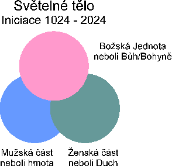
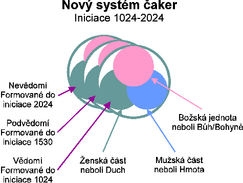
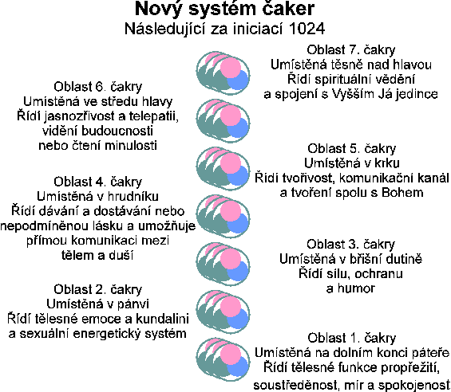
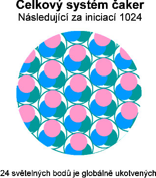

Dosa�ení vìdomí 25. dimenze:
Pøekonání pøipoutanosti duše
Lord a Lady Rize prostøednictvím Karen Danrich, Mila Sinoski, a Thomas Weber, Rama
1. prosince 1998
My, Lord a Lady Rize, kteøí øídíme 144000 chrámù vnì vašeho øídícího Boha a Bohynì, popisujeme další fázi vzestupu, která zahrnuje iniciace 2500-3500 a obsahuje ztìlesnìní celkového poètu 3500 øetìzcù DNA. Uvìdomte si prosím, �e naše èíslování iniciací je nepodstatné. Naším po�adavkem bylo, aby náš kanál vymyslel nìjakı systém, kterı by umo�òoval nìjakou synchronizaci mezi genetickımi a energetickımi zmìnami v tìlesné formì. Jsme rádi, kdy� takto navr�enı systém tento cíl splòuje.
Rádi bychom vysvìtlili nìco kolem DNA. V originální pøedloze ka�dé lidské formy na zemi (zdìdìné spolu s originálními dvìma øetìzci DNA), existuje mo�nost zapojit 15000 øetìzcù DNA, které existují v duchovní formì. Tato mo�nost 15000 øetìzcù existuje, nebo� kdysi, pøed mnoha pády ve vibracích, 15000 øetìzcù bylo ztvárnìno pøi vytváøení lidské formy. Jak klesaly vibrace planety, celkovı poèet z originální pøedlohy DNA nebylo mo�né ve fyzickém tìle zapojit z dùvody pádu do hustoty. Postupnì za posledních 50000 let, v lidské formì poklesl poèet z 15000 na dva øetìzce DNA.
Ka�dı z pùvodních dvou øetìzcù DNA je paralelou a je v harmonickém vztahu k ostatním 15000 øetìzcù. Paralelnì vedle ka�dého pùvodního DNA øetìzce, existuje 7500 vrstev potenciálního DNA materiálu, kterı se podobá vrstvièkám cibule. V procesu vzestupu, kdy� je ztìlesnìna další vrstva DNA, je ovlivnìna patøièná èást fyzikálního, éterického, mentálního a emocionálního tìla, a to zapøíèiòuje odbourávání myšlenkovıch forem strachu, pøemìnu energetického toku v aurickém poli neboli svìtelném tìle, a nárùst fyzickıch vibrací.
Vibrace odpovídá rychlosti rotace molekul. V molekulové struktuøe typu sluneèního systému, kterı na Zemi pøevládá, je nejvyšší mo�né rotace, kterou je tento systém schopen udr�et, dosa�eno pøi ztìlesnìní 2500 øetìzcù DNA. Má-li se s navyšováním vibrací pokraèovat, molekulární struktura se musí zmìnit, jak jsme popisovali v kapitole "Dál za osvobození". Molekulární struktura se zmìní z typu sluneèního systému na tøíkruhovı vzor, kterı se podobá tøí kulièkovému lo�isku, kde kulièky neustále rotují kolem sebe. Tøíkruhovı vzor nemá tak omezené mo�nosti jako sluneèní systém rotace molekul. Èím rychleji energetické kulièky v tøíkruhovém vzoru kolem sebe rotují, tím je vyšší vibrace. Pøi postupném ztìlesòování DNA øetìzcù 2500-3500, se rotace v ka�dé molekule zvìtšuje jakmile je ztìlesnìn další segment DNA, a tím se zvyšuje postupnì vibrace celé tìlesné formy.
V dalším segmentu vzestupu dochází k biochemickım zmìnám. Z biochemického hlediska je souèasné lidské tìlo vystavìno z aminokyselin neboli proteinù, které jsou spojeny dohromady, lipidù neboli tukù, a minerálù èili kostí. Náš kanál není biochemik a tak nemáme tolik informací abychom to pøesnì vysvìtlili z hlediska medicíny. Jistì však v budoucnu nìkterı jinı kanál o tom pøedá detailnìjší informace.
Aby byla tìlesná forma schopná udr�et vyšší vibrace, struktura proteinù, tukù a kostí se musí
zmìnit na "lehèí" neboli ménì hustou formu. Bìhem další fáze vzestupu jsou proteiny, tuky a
minerály v tìlesné formì postupnì pøemìòovány na ménì hustou strukturu. Nìkteré aminokyseliny,
které nejsou ji� více pro tìlo potøebné, jsou úplnì z organismu vyjmuté a postupnì z tìla odcházejí.
Nìkteré aminokyseliny mají zkrácené øetìzce. Analogií mù�e bıt koncept "èerveného masa"
neboli hovìzího, které je transformováno na lehèí "bílé" maso nebo rybí. Podobnım zpùsobem
mají husté tuky neboli polypeptidy zkracovány øetìzce, aby vytváøely "lehèí" formu tuku. Opìt
tento postup mù�eme pøirovnat k vepøovému sádlu, které je transformováno na tuk podobnı
tuku v zeleninì. Kosti jsou také postupnì transformovány na skupiny minerálù, které jsou menší a
ménì husté.
Ve stáøí
jsou u lidí
bì�né køehèí
kosti. To je
dùsledek
rozpadu, kterı
v kostech ve
stáøí
pøevládne.
Mnoho z vás je
dobøe
obeznámeno
rozpadem v
zubech, kterı
vám tam
vytváøí
prohlubnì a
díry, které pak
dentista musí
vyplòovat.
Rozpad v
kostech má takté� za následek vytváøení dìr v celé kostøe. Všechen rozpad je opraven do
iniciace 3024. Jakmile je rozpad opraven, zaène restrukturalizace minerálù v kostech.
Naše kanály monitorují menší skupinu uèitelù a léèitelù, kteøí podstupují další fázi procesu vzestupu. Problémy, které se vyskytují u této skupiny mohou tak bıt studovány a jakmile zbytek lidstva zaène podstupovat tento proces, mù�e jim bıt pøedcházeno, nebo jsou opraveny. Jedním z problémù kterı byl objeven je, �e nìkteøí jedinci neudr�í svoji novou vibraci, aèkoliv ji� mají krystalickou formu (ukonèili iniciace 1024). Tito jedinci èasto zakouší extrémní vlny nálad a energií, od velmi vysokıch a energetizujících a� k velmi nízkım, tak�e musí dlouho spát, nebo si schrupnout bìhem dne. Objevili jsme, �e v jejich síti energetickıch drah nìkteré chybí.
Všechny formy lze pøirovnat k hustì slisované pavuèinì energie, velice podobné holografické struktuøe pøekøí�enıch vláken v kusu látky. Bì�ná sí� u dospìlého èlovìka s dvìma øetìzci DNA má mnoho defektù, dìr a trhlin ve zhuštìné tkaninì energie, která dr�í pohromadì jejich tìlesnou formu. Oblasti kde jsou díry, defekty a trhliny jsou obecnì øeèeno místa, kde je mnoho rozpadu a které mohou vést k nemoci daného orgánu nebo oblasti tìla. Bìhem iniciací 1024-3024 jsou ve vìtšinì tyto oblasti opraveny, tak jak dochází k transmutaci rozpadu v tìle.
K dírám a trhlinám u mnoha jedincù pøibıvá ještì problém, �e mnoho energetickıch drah èi vláken, které procházejí lidskou formou zcela chybí. V nìkterıch pøípadech naše kanály dokonce vidìly, �e chybí a� padesát procent energetickıch drah èi vláken. To bylo hlavnì u jedincù, kteøí mìli nejvìtší problémy s udr�ením své vibrace.
Krystalická pøedloha tvoøí novı energetickı vzor, kterı pøekrıvá éterické tìlo lidské formy. Krystalická pøedloha je pøidána na zaèátku 13. zasvìcení a je bìhem nìkterıch iniciací podle potøeby mìnìn. Vìtšina této práce se dìje v noci, kdy� iniciát spí a Øád Rize na ni dohlí�í. Jak tìlesná forma navyšuje svoji vibraci, je v pøedloze nahrazena stará sekvence rozvodné sítì novou a buòky v té dané oblasti tìla jsou pøevedeny na krystalickou strukturu. Kdy� nìkde kolem hlavní linie chybí rozvodná vlákna, nelze informaci a energii transportovat ke skupinám bunìk, které jsou v dané oblasti tìla. Kdy� chybí informace, nemohou bıt buòky v této oblasti transformovány na krystalickou strukturu. Vısledkem jsou pak kapsy s buòkami, které v tìle vibrují v ni�ší frekvenci. Nerovnomìrná distribuce vibrací pak ztì�uje udr�ování vysoké vibrace v prùbìhu denních èinností.

Aby tento problém mohl bıt odstranìn, Øád Rize pøivedl velké mno�ství prùvodcù léèitelù, kteøí asistují pøi proøezávání chybìjících energetickıch linií tìlesnou formou. Pøipomínáme, �e to není pouze lidskı problém. Chybìjící rozvodné kanály se objevují i u rostlin, �ivoèichù, minerálù, delfínù a velryb a takté� u samotné Matky Zemì. Nyní probíhá proces opravy tohoto problému u všech forem na Zemi. Ti z vás, kteøí procházíte tímto procesem a mají problémy s energií nás mohou navštívit v našem hlavním léèitelském chrámu Øádu Rize (kterı existuje v centru Zemì) a mohou si nechat opravit rozvodné kanály buï ve spánku, nebo pøi meditaci.
Kdy� u� jsme pøirovnali vzor nové DNA k vrstvièkám cibule, rádi bychom nìco dodali té� o dimenzích a pokroucení. Dimenze té� pøipomínají vrstvy cibule. Kdybyste si pøedstavili vaše stvoøení jako cibuli, dimenze s nejni�ší vibrací by pøedstavovala krajní slupku. Èím vyšší je dimenze, tak existuje na vrstvièce, která je blí�e k centru cibule a má vyšší vibraci. Èím vyšší vibrace, tím blí�e k centru a tento støed mù�eme pøirovnat k "jednotì s Bohem".
Pokroucení lze pøipodobnit k ohnutí paprsku nebo šípu. Ve vysokıch dimenzích, v blízkosti
støedu cibule, je paprsek rovnı jako šíp. Jakmile tento paprsek sestupuje skrze vrstvièky cibule
jako šíp, ka�dá vrstva zpùsobí jeho malé zakøivení. Èím ni�ší dimenze, tím vìtší je zakøivení.
Kdy� dosáhne paprsek poslední vrstvièku cibule, nejni�ší dimenzi, je pokroucen do takové
míry, �e ji� nepøipomíná rovnı paprsek, ale spíše spirálu. 
Vytvoøíme-li analogii mezi paprskem
a myšlenkou, pak ve vysokıch
dimenzích jsou myšlenky Boha/Bohynì
jasné a precizní a teèou v pøímém smìru
jako rovnı paprsek. Jakmile Jeho/Její
myšlenky sestupují do ni�ších dimenzí,
zaèínají se ohıbat (jako spirála) a pak
jsou subjektem pokøivené interpretace.
Myšlenky lidské civilizace ve tøetí
dimenzi jsou dùsledkem nejvìtšího
pokroucení myšlenek
Boha/Bohynì/Všeho Co Je. Nejen lidská
civilizace zakouší pokroucení
Boha/Bohynì, ale té� Lordové a Lady,
kteøí vytváøejí formu a øídi Hierarchie
vaší reality.
Pokroucení má pøímou souvislost s pøipoutaností. Pøipoutanost je energeticky viditelná jako energetické paprsky spojující jedince s nìkım jinım, nebo s objektem jeho �ivota. Nejenom formy neboli tìla zakouší pøipoutanost, ale i duše, která tuto formu obıvá. Pøipoutanost duše se od pøipoutanosti lidí nijak neliší a lze ji pozorovat jako energetické propojení mezi duše s jinou duší nebo jinou skupinou duší.
Pøipoutanost (propojení mezi dušemi) ve vysokıch dimenzích Boha/Bohynì neexistuje. V 25. dimenzi vašeho stvoøení pøipoutanost mezi dušemi té� neexistuje. Zkušenost pøipoutanosti zaèíná a� u duší �ijících na úrovni 20. a ni�ší dimenze. Èím ni�ší dimenze, tím je vìtší pøipoutanost, èili silnìjší energetické vlákno mezi dušemi.
Tato vlákna mezi dušemi pøeká�ejí pøi komunikaci s Bohem/Bohyní jak informace sestupují do ni�ších dimenzí. Jak informace sestupují, vlákna mezi dušemi zpùsobují, �e se komunikace ohne nebo pokøiví, nebo� nemù�e vláknem projít, ale musí jít kolem nìj a mezi vlákny. Jak se komunikaèní kanál Boha/Bohynì ohıbá a proplétá mezi vlákny pøipoutanosti duší �ijících na úrovních 3-20 dimenze, komunikace sama o sobì je pozmìnìna nebo pokroucena a v nìkterıch pøípadech dokonce mù�e bıt úplnì zablokována a tak nedojde do ni�ších úrovní.
Úroveò pøipoutanosti ve tøetí dimenzi vytváøí sí� podobnou pavuèinì, která je velmi hustá. Je v ní velmi málo prostupù pro informace. Z toho dùvodu jsou myšlenky ve tøetí dimenzi tak husté a je velmi nesnadná komunikace mezi duchem a lidmi. Na Zemi je pøipoutanost mezi lidmi na fyzické rovinì, mezi dušemi na éterické rovinì a mezi Lordy a Lady, kteøí udr�ují vibrace 1. a� 7. paprsku.
Vlákna mezi dušemi ve tøetí dimenzi jsou dùsledek karmy. Karma je jednoduše øeèeno dohoda mezi dvìma dušemi. Všechny dohody mezi jakımikoliv dušemi mají za následek propojení. Proces vzestupu postupnì uvolòuje karmu, všechny dohody a všechna propojení fyzickıch forem i duší. Opravená genetická pøedloha pro krystalickou formu umo�òuje uvolnìní tìchto vláken a zpùsobuje, �e ka�dá duše procházející procesem vzestupu uvolòuje všechny vlákna ve všech dimenzích v celé své duševní linii. Opravená pøedloha a uvolnìní vláken pøipoutanosti je dùsledek "odpuštìní" dìdièné karmy pocházející od øídícího Boha vašeho stvoøení, Lorda Rámy.
Mimo èas a prostor existuje vše najednou. Kdy� jste jasnozøiví a vyladíte se na tøetí dimenzi, mù�ete komunikovat s Lordy, se kterımi je mnoho z vás obeznámeno: Kuthumi, Hilarion, Serapis Bey, Sanat Kumara, Djwal Kuhl a tak dále. Tito Lordové jsou plni stejné pøipoutanosti jako celé lidstvo. Úroveò komunikace kterou oni dostávají z dimenzí nad nimi je velice pokroucena vlivem pøipoutanosti, která pøevládá v dimenzích 3-5. Kdy� se vyladíte na ètvrtou dimenzi, naleznete Lordy a Lady ètvrté dimenze, a kdy� se naladíte na pátou dimenzi, naleznete novou Hierarchii páté dimenze. Hierarchie páté dimenze se pozvedla nad pokroucení dimenzí 3-5 a tak komunikace s nimi je èistší ne� s jejich pøedchùdci. Nelze ale øíci, �e by pátá dimenze byla prosta všeho pokroucení. Zajisté není. Kdy� iniciát vzestupuje, je však nezbytné, aby pracoval s nejèistšími komunikaèními kanály, smìry a prùvodci, kteøí zajiš�ují léèení jejich tìlesné formy.
My, ze Øádu Rize, jsme na Zemi ukotvili 800 léèitelskıch chrámù a pracujeme pøímo s hierarchií páté dimenze. Prùvodci léèitelé, kteøí pøicházejí ze Øádu Rize, jsou ka�dıch 48 hodin vymìòováni za nové. Proè? Pouhıch 48 hodin staèí, aby naši prùvodci zaèali bıt té� pokøiveni vibracemi, které na Zemi existují. Z tohoto dùvodu jsou tak èasto vymìòováni. Je naším cílem zajiš�ovat co nejèistší mo�nou komunikaci. Vytváøíme komunikaèní a léèitelskı most mezi øídícím Bohem a Bohyní tohoto stvoøení a Bohem a Bohyní vašeho Jádra v dimenzi 4000, stejnì tak jako s vaší milovanou Zemí.
Jsme dostupní všem pro kanálování i práci pøi meditaci nebo ve spánku. Jediné co musíte udìlat, je zamìøit se na jméno Rize a my budeme energeticky pøita�eni do vaší pøítomnosti. Mo�ná se divíte, proè jsme na Zemi. Jsme zde, proto�e modlitby a prosby o pomoc dosáhly do našich chrámù a øídícímu Bohu a Bohyni vašeho Jádra. Tyto modlitby byly zakotveny tìmi, kteøí studují spolu s našimi kanály a vytvoøily vibraèní vlnu dostateènì mohutnou, aby dosáhla za hranice pokøivení vašeho øídícího Boha a vyslala jasné volání o pomoc, které se rozeznìlo ve vašem Jádru.
Kdy� se skupina lidí sejde dohromady se spoleènım zámìrem, lze vytvoøit vibraci, která je vyšší, ne� kterou kdokoliv z nich je schopen udr�et. Tato zvıšená vibrace mù�e bıt pou�ita aby pomohla skupinì projít urèitı segment zasvìcení, pro léèení tìla, planety jako celku, nebo pro komunikaci s dimenzemi, které by jako jednotlivci nedosáhli. Tomu naše kanály rozumí a intuitivnì vìdí, �e jejich prosba o pomoc bude zaslechnuta jedinì tehdy, kdy� vytvoøí dostateènì vysokou vibraci, která pøekoná bariery pokroucení, které obklopují vaše stvoøení. To se podaøilo v èervenci 1998 a Øád Rize reagoval na volání o pomoc, volání po ukonèení bolesti na Zemi a volání po novém zítøku zalo�eném na lásce, které je dostatek pro všechny.
Vìdomí a tìlesná forma jsou sice oddìlené, ale jsou vzájemnì svázané. Aèkoliv iniciátova tìlesná forma mù�e pøebıvat ve tøetí dimenzi, jeho vìdomí bìhem procesu vzestupu mù�e zaèít dosahovat k myšlenkovım formám vyšších dimenzí. Èím vyšších dimenzí myšlenkovıch forem iniciát dosahuje, tím má èistší komunikaèní kanál, a tím dostává informace od Boha/Bohynì jasnìjší a ménì pokroucené. Èím je vyšší vibrace, kterou je schopná tìlesná forma udr�et, tím je vyšší dimenze, do které vìdomí dosáhne. Naše kanály cestovaly a dosáhly dimenzí a� dva miliony. Ka�dı iniciát bude kontaktovat ty dimenze, ve kterıch pøebıvá jeho Já Jsem Pøítomnost, aby mohly splnit úkol své duše na Zemi. Ti z vás kdo ve svém svìtelném tìle vìdomì cestujete, jakmile dosáhnete zasvìcení 1024, mù�ete pøímo pøijít do Øádu Rize a pøímo s námi komunikovat v našich chrámech.
Jakmile iniciát dosáhne zasvìcení 3500 a ztìlesní 3500 øetìzcù DNA, zaènou dosahovat vìdomí 25. dimenze. 25. dimenze ji� existuje mimo pøipoutanost a tím je ménì náchylná na pokroucení ne� ni�ší dimenze. Nelze øíci, �e by v 25. dimenze �ádné pokøivení nebylo, pouze tam chybí pokøivení vztahující se na pøipoutanost. Vìdomí 25. dimenze té� osvobodí iniciáta od emocionální pøipoutanosti duše vztahující se na pøipoutanost jeho duševní linie v 25 dimenzi. Nìkteré pøipoutanosti duše se budou vztahovat na citovou pøipoutanost, kterou má iniciát na fyzické úrovni. Jak pøipoutanost duše, tak pøipoutanost na fyzické úrovni jsou uvolòovány souèasnì.
Pøíkladem uvolnìní pøipoutanosti tohoto druhu mù�e bıt náš kanál Míla. Nemìla dohodu se svım pìtiletım synem na úrovni duše, �e mu bude dìlat rodièe, a veškerá karma mezi nimi byla ji� uvolnìna pøed mnoha mìsíci. Vídávala se synem pravidelnì, dokud nebyl uvolnìn zbytek pøipoutanosti myšlenkovıch forem o rodièovství. Její duše si nepøeje, aby se v tomto �ivotním období zabıvala rodièovstvím nebo� její duše má jiné cíle, které na fyzické rovinì zabírají mnohem více èasu. Dùsledkem, po ukonèení tohoto segmentu iniciací, je �e Míla se vzdala rodièovskıch povinností s vıchovou syna a pøedala je svému bıvalému man�elovi a je volná pro plnìní zámìrù její duše.
V lidské tìlesné formì je to právì pøipoutanost, která stojí duši v cestì pøi naplòování jejího Bo�ského plánu. V lidskıch myšlenkách je zrušení dohody o rodièovství pova�ováno za tragédii. Ale z perspektivy duše, jestli�e není dohoda mezi duší rodièe a duší dítìte o pokraèování vztahu, pak pokraèování takového závazku je ve skuteènosti v rozporu se smìrem vıvoje, pro kterı se duše zrodila a kterı chce v tomto ztìlesnìní naplnit. Pøipoutanost se støetává z naplnìním Bo�ského plánu.
Ostatní èlenové skupiny našich kanálù bojují proti partnerskım a man�elskım svazkùm, které nejsou v souladu s pøáním duše. Pøedpokládáme, �e pro vìtšinu iniciátù bude obtí�né ukonèit tento segment vzestupu, bez uvolnìní všech vztahù, které jsou zalo�eny na pøipoutanosti a ne na dohodách duší.
Pro naše oba kanály znamenalo uvolnìní vztahù zalo�enıch na pøipoutanosti pøenechání dìtí man�elùm a ukonèení komunikace se svımi rodièi, sourozenci a mnoha dalšími, kteøí nejsou v souladu se zámìrem jejich duše. Dùvodem je i posun ve vibracích, které nyní ztìlesòují. Všechny vztahy na Zemi jsou zalo�eny na podobné rezonanci. V pøípadì našich kanálù, jejich rodièe, sourozenci, dìti a bıvalí man�elé ji� více nerezonují s jejich novou vibrací a proto byli vyvr�eni z jejich okruhu. Podobnım zpùsobem jsou ti, kteøí jsou k nim nyní pøitahováni na soubì�né cestì vzestupu a spoluvytváøejí zkušenost intimity, harmonie a radosti kdy� se shromá�dí.
Mnozí si budou myslet, �e je to tì�ká cesta. Ale ze zkušenosti našich kanálù lze øíci, �e pøítomnost osob s velmi nízkou vibrací v nich vyvolává fyzicky nepøíjemné pocity, které èasto vedou a� k pocitu nemoci. To je prostì vısledek nerezonance s nízkımi vibracemi, kterı zpùsobuje disharmonii a vibraèní kolísání v jejich éterickém poli a auøe. Takové vibraèní kolísání zpùsobuje fyzickou bolest, citovou bolest a obèas i pocit fyzické nemoci z dùvodù disharmonie. Je-li fyzická bolest k neunesení, je jedinım pøirozenım øešením ukonèení vztahu.
Pozemská rovina reality je obtí�ná úroveò k pøekonání. Ti kdo� se dali na duchovní cestu èasto zjiš�ují, �e jsou testováni zpùsoby, které nejsou pøíjemné a postrkují hranice toho o èem si mysleli, �e se toho musí "vzdát", nebo to opustit, aby vzestoupili. Všechny takové testy které souvisí s procesem vzestupu demonstrují iniciátovu vùli upøednostnit jejich duši, Boha/Bohyni, a Bo�skı plán pøed vším ostatním. Ti, kteøí vytrvají na cestì a následují touhu své duše, za�ijí odmìnu ve vìtší radosti, lásce a svobodì, ne� jakou si v lidské tìlesné formì umìli kdy pøedstavit.
INICIACE 2500-3500:
ZTÌLESNÌNÍ VÉDICKÉ ROVINY
Védická rovina je nevìdomou rovinou reality a má vesmírnou podstatu . Nevìdomá Védická rovina byla vytvoøena jako dùsledek destrukce vesmíru, neboli pádù vesmíru v prùbìhu èasu. Vesmír, v naší terminologii, je oblast obsa�ená Logosem nebo Lordem, která obsahuje mnoho sluneèních systémù. V pøípadì Zemì spadáte do vesmíru, kterı obsahuje devìt hvìzd vèetnì hvìzdného systému Plejád a vašeho slunce. Váš vesmír byl po dobu jednoho milionu let øízen Lordem Melchizedekem a teprve nedávno byl pøedán do rukou nového Logose, Lorda Suntuno.
Víme, �e na Zemi je mnoho bytostí, které stále spolupracují s Lordem Melchizedekem. Bude nutnı vzestup Zemì do další dimenze, aby všechna vìdomí a energie Lorda Melchizedeka byly ze Zemì odstranìny. Dùvod je jednoduchı. Hladina hustoty a pøipoutanost na Zemi brání Melchizedekovi, aby uvolnil všechny své energie z molekulární struktury Zemì døíve, ne� lidstvo a Zemì zvıší své vibrace. Vìdomí Lorda Melchizedeka však opustilo svoji pozici v tomto vesmíru a Lord Suntuno nyní øídí devìt hvìzdnıch systémù v tomto vesmíru, vèetnì našeho slunce. A� Zemì vzestoupí, dostane se pod jurisdikci nového vesmírného Logose (Lorda a Lady Adoni) a stane se tøetí hvìzdou ve hvìzdném systému Síria.
Tøíkruhovı vzor, kterı bude lidstvo a Zemì ztìlesòovat pøi svém vzestupu nebude obsa�en jen v energetické a molekulární struktuøe tìlesné formy. Stávající struktura sluneèního systému se také zmìní, aby odrá�ela novı tøíkruhovı vzor. Po vzestupu Zemì budou ve hvìzdném systému Síria rotovat kolem sebe tøi hvìzdy podobnì jako tøi koule v molekulární struktuøe našeho nového genetického vzoru. Tento tøíkruhovı vzor sebou pøinese konec pokroucení na solární úrovni ve formì páté dimenze. Veškeré pokroucení je dùsledkem ztráty spojení s Bohem/Bohyní Všeho Co Je. V tøíkruhovém vzoru jsou energie mu�ská, �enská i energie Bo�ské Jednoty neboli Boha/Bohynì/Vše Co Je.
Hvìzdnı systém Síria je pøedurèen, aby byl vzorem ze kterého proudí veškeré energie do všech forem v tomto stvoøení, které mají bıt opraveny a vyvedeny z pokøivení. Sírius A bude øídící hvìzdou ovládající Sírius B a C podle Bo�ského plánu Lorda a Lady Adoni a z toho dùvodu bude zodpovìdnı za prosazování solární úrovnì vzoru Bo�ské jednoty. Sírius B bude zajiš�ovat �enskı aspekt, a Zemì neboli Sírius C bude zajiš�ovat mu�skı aspekt. Všechny tøi hvìzdy budou spolupracovat a vytváøet rovnováhu a jednotu v sluneèním systému. Na pøedlohu tìchto zmìn dohlí�í Øád Rize. Po vzestupu Zemì budou podobné korekce provedeny v hvìzdném systému Plejád a Lord Suntuno zahrne pøi vzestupu pátou dimenzi asi za 4000 let.
Tento vısledek ovšem závisí na vzestupu Zemì, kterı nebude stoprocentnì jistı, dokud všechna vìdomí na Zemi se s tímto zámìrem nesjednotí. To vy�aduje, aby ka�dá lidská bytost souhlasila se vzestupem na úrovni duše. Prozatím pouze jedno procento lidské populace souhlasilo se vzestupem. Pøes všechny informace, které byly do vaší úrovnì reality pøedány z jinıch zdrojù, jedno procento nestaèí vytvoøit dostatek energie aby podpoøilo Zemi na jejím vzestupu. V souèasné dobì je Zemì na cestì ke katastrofì, i kdy� je pøáním Øádu Rize obrátit tento vısledek pomocí pochopení lidského vìdomí. Jsme stále v procesu zasévání tìchto informací do vìdomí ostatních druhù ve vašem stvoøení, aby té� mìli pøíle�itost zúèastnit se na zmìnì budoucnosti Zemì.
Na védické rovinì naleznou iniciáti prokletí, která jsou zaznamenána v podvìdomí vesmíru. O podstatì prokletí jsme detailnì psali v kapitole Dál za osvobození a doporuèujeme, aby jste si tuto kapitolu pøeèetli, jestli�e jste tak ji� neuèinili. Kdy� iniciát ztìlesní stav "kompletního osvobození" neboli zasvìcení 1024, je transformována všechna karma udr�ovaná v nevìdomí, která má souvislost se zemskou úrovní, a nevìdomá rovina svázaná se Zemí se sjednocuje v jejich tìlesné formì s vìdomou rovinou. Kdy� iniciát ztìlesní zasvìcení 2500, je transformována všechna karma zaznamenaná v solárním nevìdomí a nevìdomá rovina sluneèní úrovnì se sjednocuje v jejich tìlesné formì s vìdomou rovinou. Kdy� iniciát ztìlesní zasvìcení 3500, je transformována všechna karma zaznamenaná ve vesmírném nevìdomí a vesmírná nevìdomá rovina se sjednocuje v jejich tìlesné formì s vìdomou rovinou.
Aby bylo mo�né oslovit karmu zapsanou na nevìdomé vesmírné úrovni, musíme objasnit úèel øídícího Boha/Bohynì vašeho Jádra. My, Øád Rize dohlí�íme na 144 øídících Bohù/Bohyní, kteøí se cvièí. Na jednotlivıch úrovních tréninku se Bohové a Bohynì uèí o tvoøení a destrukci z perspektivy ztìlesnìní planet, hvìzd, vesmíru, galaxií, kosmu, stvoøení, nebo jako øídící Bùh/Bohynì mnoha stvoøení souèasnì. Váš øídící Bùh je tvoøen ètrnácti bohy stvoøiteli, kteøí se spojili aby vytvoøili paralelní zkušenost. Lord Ráma udr�uje stvoøení ve kterém existuje i Zemì a to je jedním ze stvoøení, která on simultánnì pro�ívá.
Ka�dé z deseti stvoøení, které Lord Ráma pro�ívá, je jako film s kompletním scénáøem. Role Lorda Rámy se podobá úloze øeditele, kterı dosazuje ostatní stvoøitele (kteøí mají zájem na spoluúèasti v tomto dramatu) do rùznıch pozic, které se musí obsadit. Lord a Lady Athéna jsou nyní na pozici bohù stvoøitelù vašeho stvoøení. Lord a Lady Athéna podstupují proces mnoha zmìn. Jedna z nich je vımìna Lorda Melchizedeka Lordem Suntuno. Dùvodem je, �e Lord Suntuno je obeznámen s tokem energie ve stvoøení tohoto typu a stojí mimo zkušenost pokøivení a proto mù�e pomoci s nápravou problémù a anomálií ve vìdomí tohoto stvoøení.
Stvoøení vznikají a zanikají. Nìkdy dojde k jejich kompletnímu zhroucení. To je cesta, jak se Bohové stvoøitelé uèí o nièení a seznamují se s tím, co u� pøíštì "nedìlat". Ka�dı z Bohù má svoji arénu ve které ve skuteènosti mù�e zpùsobit jen málo destrukce nebo škody zbytku stvoøení. Mimo formu není nikdy nic ztraceno. Duše mohou bıt "pøetaveny" a opraveny kdy� Lord/Lady ukonèí svoji vıukovou lekci, a pak mohou pokraèovat do další zkušenosti zase o nìco chytøejší.
Lord Melchizedek pøijal roli Lorda vesmíru od dvou Lordù, kteøí byli nedávno nahrazeni Lordem a Lady Athénou. Lord Melchizedek byl velmi nezkušenı Lord. Avšak, stvoøení se dostalo a� tak daleko do hustoty, �e velmi málo Lordù mìlo zájem jej udr�ovat, a tím pádem sehnat nìkoho na tuto práci nebylo vùbec jednoduché. Melchizedek, ve své nezkušenosti, plnì neporozumìl úèelu polarity. Polarita funguje pouze tenkrát, kdy� jsou oba póly v rovnováze. Ve stvoøení s podobnou civilizací, je potøeba udr�ovat v rovnováze proporcionální mix svìtla a tmy (neboli tvoøivıch a destruktivních sil) v rámci civilizace jako celku. Melchizedek, proto�e neporozumìl polaritì, oddìlil svìtlo a tmu, umístil všechny temné duše do vašeho sluneèního systému a všechny tvoøivé duše do ostatních osmi sluneèních systémù Plejád.
Iniciáti objeví, �e je zapsáno ve vesmírném nevìdomí, �e Zemì a náš sluneèní systém byl pou�íván jako vìzeòskı tábor pro "temné" neboli destruktivní duše. Øídící orgány na Plejádách posílaly "temné duše" na Zemi posledních 300000 let. Podle vesmírnıch záznamù vašeho stvoøení bylo rozhodnutí o tomto pou�ití našeho sluneèního systému uèinìno z dùvodu jeho vzdáleného umístìní od všech ostatních hvìzdnıch systémù a znaèné vzdálenosti od Plejád. Sanat Kumara a vaše Planetární a Sluneèní Hierarchie dostaly za úkol zajistit, �e nikdo neunikne (co� jinımi slovy znamená nebude se vyvíjet) a vımìnou za to dostali volnost pøi øízení jejich stvoøení, bez vnìjšího zasahování.
Jedním z problémù nevyvá�enosti polarit, které Melchizedek zapøíèinil ve vašem stvoøení, je nedostatek vıvoje. Bez vıvoje nemù�e Zemì vzestoupit. Bez vzestupu Zemì spontánnì shoøí a stane se z ní èerná díra. Bez vzestupu Zemì nemù�e Slunce a váš sluneèní systém vzestoupit, a to se tıká i Slunce dvanácté dimenze, kolem kterého se naše Slunce otáèí, a stejnı dopad to má i na èást Mahátmy. K tomu mù�eme ještì pøipoèítat stejnou sekvenci vıvoje sluneèního systému Plejád, která by následovala. Èerná díra kterou by Zemì vytvoøila by odsála veškerou �ivotní sílu ze zbıvajících dvou tøídimenzionálních planet ve hvìzdném systému Plejád, a ty by té� nebyly schopné vzestoupit, a� pøijde jejich èas. Tím pádem by se z nich té� staly èerné díry ovšem s tím rozdílem, �e pak u� by vzniklé èerné díry mìly dostatek pøita�livıch sil, aby do sebe vtáhly zbytek celého stvoøení. Zde vidíte dùvod, proè má tolik bytostí z jinıch dimenzí takovı zájem na vzestupu Zemì a jsou nápomocní pøi odstraòování vaše
ho pokroucení. Z toho je i vidìt, proè je pro vzestup Zemì nutná intervence z oblastí mimo pokøivení.
Dalším problémem s evolucí planety obsazené témìø vıhradnì destruktivními dušemi je, �e je pro takovou planetu je vzestup vlastnì nemo�nı. Destruktivní duše odsávají tolik �ivotní síly planety, �e navıšení vibrací je nemo�né, dokud nejsou všechny destruktivní duše odstranìny a pøetaveny. Velké Bílé Bratrstvo, které zná tento problém pracuje na legislativì, která by umo�nila odstranìní destruktivních duší ze Zemì, aby mohla vzestoupit. Kdy� tato legislativa projde, sestoupí do uvolnìnıch lidskıch forem pøíchozí z vysokıch úrovní s cílem vzestupu lidské formy a pomoci tak Zemi s jejím globálním vzestupem.
Chyba oddìlení svìtla a tmy, kterou Melchizedek udìlal není nijak nová. Ka�dı Bùh Stvoøitel se musí nauèit dopad takovıch experimentù, a to se nauèí, kdy� udr�uje stvoøení. Tak�e my, Øád Rize, nijak Melchizedeka nesoudíme, aèkoliv jsme si dobøe vìdomi hladiny bolesti která na Zemi existuje jako dùsledek takového experimentu. Skrze zkušenost bolesti se Lordi Stvoøitelé v tréninku této úrovnì uèí co mohou dìlat a co ne.
Prokletí vesmírné úrovnì mají šest hlavních vzorù a iniciát vidí jak se odrá�í v lidstvu stejnì tak jako v jeho vlastní zkušenosti. Tato prokletí pùsobí stejnì jako ta, o kterıch jsme ji� mluvili, a mají za následek ztrátu síly a informací. Kdy� byl z vašeho sluneèního systému vytvoøen vìzeòskı tábor, Plejáïané prokleli váš sluneèní systém šesti zpùsoby. Jakmile iniciáti projdou tímto úsekem zasvìcení, navrátí se jim jako jednotlivcùm síly na vzestup, které byly kolektivnì lidstvu sebrány Plejáïany.
Rádi bychom upozornili na to, �e mnoho lidí bylo odzbrojeno pøedávanımi informacemi z Plejád. Aèkoliv informace z takovıch zdrojù mohou bıt hodnotné, je nezbytné, aby iniciát nalezl svoje vedení v sobì a ze své Já Jsem Pøítomnosti. Takové vedení pøichází mnoha cestami dokonce i k tìm, kteøí nejsou jasnozøiví nebo telepaticky nadaní. Za iniciací 1024 se objevuje vìdìní tìla. Vìdìní tìla je zá�itek, kdy jednoduše víte co je pro vás správné a jakı je další krok vaší cesty. Vìdìní tìla je pøístupné pomocí technik známé jako kineziologie neboli "svalové testování." Náš kanál Ráma (pøed tím ne� se objevily jeho telepatické schopnosti) se nauèil dìlat všechna rozhodnutí ve svém �ivotì pomocí "svalového testování". Jeho závazek poslouchat pouze zpìtnou vazbu získanou ze svého svalového testování mu pomohla projít procesem vzestupu bez pøímého telepatického kontaktu. Poslední dobou se mu otevøely i schopnosti telepatického slyšení, jasnozøivosti a schopnosti pøijímat informace jako kanál. To se pøihodí i mnoha iniciátùm, kteøí projdou iniciací 5024, aèkoliv to závisí na zámìru duše, kterı má bıt v té které konkrétní tìlesné formì vyplnìn.
KLETBA NA VIBRACE
Aby se ubezpeèili, �e Zemì a sluneèní systém se nebude vyvíjet (aby se ujistili, �e �ádná duše,
kterou sem poslali neunikne), prokleli Plejáïané naše vibrace, aby omezili náš vıvoj. Taková
kletba èiní nemo�nım, aby nìkterı iniciát dosáhl vibrací vyšších ne� je urèitá oktáva dokud
tato kletba není uvolnìna. Kdy� naše kanály ukonèily tento segment iniciací, dostali se za hranice
vibraèního omezení nastaveného Plejáïany.
Kletba na vibrace se mù�e té� objevovat mezi lidmi a èasto vede ke zkušenosti deprese. Èasto rodièe, kteøí jsou su�ování nadšením svıch dìtí, je nevìdomì proklejí na vibrace. Kdy� se tak stane, dítì ztratí radost, kterou døíve znalo, a mù�e dokonce upadnout do stavu hlubokıch depresí, co� závisí na tom jak moc jsou jejich vibrace omezovány. Kdykoliv se dítì sna�í posunout se do oblasti radosti a štìstí, kletba zpùsobí propad vibrací zpìt a vrátí je do stavu depresí nebo bolesti. Mnoho dospìlıch nese takovou kletbu a trpí záchvaty depresí, muèivou úzkostí a bolestmi. Náš kanál Ráma trpìl depresemi skoro celı �ivot. Jeho trvající záchvaty depresí mìly pøímou souvislost s genetickou kletbou uvalenou Plejáïany na lidské vibrace a nemohly bıt úplnì uvolnìny, dokud jeho tìlesná forma neztìlesnila Védickou rovinu.
KLETBA NA KONTAKT SE ZDROJEM
Aby se ubezpeèili, �e Zemì a sluneèní systém se nebude vyvíjet, prokleli Plejáïané náš kontakt s
naší Já Jsem Pøítomností. Bez vnitøního nebo vyššího vedení, se druh nemù�e vyvíjet. Kdy�
je uvolnìna tato oblast prokletí z vesmírného nevìdomí, obnoví iniciát svùj pøímı kontakt se svojí
Já Jsem Pøítomností.
Kletba na kontakt se zdrojem se mezi lidmi té� objevuje a má za následek narcismus ve vaší civilizaci. Narcismus je stav bytí, kdy jedinec nemù�e navázat vztah k nikomu a nièemu mimo sebe a svá vlastní dramata. Extrémní forma narcismu je známá té� jako autismus. Narcismus je dùsledek kletby Plejáïanù na kontakt se Zdrojem, která se v lidské tìlesné formì stala genetickou.
Naše kanály objevily, �e vìtšina lidí má tendenci k polarizaci v jednom ze dvou smìrù: Buï jsou do urèitého stupnì narcistiètí, nebo ztratili sama sebe v narcistickıch dramatech ostatních lidí. Nìkdo to mù�e nazıvat polarizací mezi vnitøním a vnìjším zamìøením. Vnitønì zamìøenı jedinec je do urèitého stupnì narcistickı a jedinec zamìøenı vnì je ne-narcistickı.
Vnitønì zamìøenı jedinec trpí neschopností pochopit nebo se spojit s realitou nìkoho jiného. Rozumí pouze svım vlastním dramatùm a jedinou cestou jak se s nìkım mù�e spojit, je zatáhnout ho do svého vlastního dramatu. Pokud je toto drama diskutováno, jsou schopni pochopit konverzaci. V okam�iku, kdy chce ten druhı zaèít mluvit o svıch vlastních dramatech, narcistickı jedinec zaène zírat do prázdna a není schopen soustøedit se na konverzaci nebo komunikaci.
Jedinec zamìøenı vnì trpí ztrátou osobnosti soustavnım zatahováním do dramat jinıch lidí. Takovı jedinec nakonec nachází sám sebe, jak skonèil ve vztahu s vnitønì zamìøenım jedincem a zjiš�uje, �e jeho �ivot je øízen potøebami jinıch.
Kdy� iniciát projde tímto segmentem zasvìcení, osobnost najde støední cestu a svoji vlastní identitu ve všem co tou�í ve svém �ivotì spoluvytvoøit. Pøíliš narcistiètí jedinci se nauèí soucítit s jinımi a opìt získají schopnost spojit se s jinımi i svou vlastní Já Jsem Pøítomností. Pøíliš vnì zamìøení jedinci znovu získají smysl pro svoji vlastní identitu a urèitı odstup od potøeb ostatních a té� se spojí se svojí vlastní Já Jsem Pøítomností.
KLETBA NA INFORMACE
Aby se ubezpeèili, �e Zemì a sluneèní systém se nebude vyvíjet, uvalili Plejáïané na náš sluneèní
systém kletbu, tím vyjmuli všechny nezbytné informace pro vıvoj z planetárních a solárních
archívù. Kdy� chybí informace pro vıvoj nebo pøe�ití, duše, aby ve stvoøení pøe�ila, se stává
závislá na druhıch a jejich øídících orgánech. Kletba na informacích vedla ke zkušenosti
závislosti na druhıch, jinak se v tomto sluneèním systému nedalo pøe�ít. Jakmile je tento segment
iniciací zpracován, iniciát ji� více nezávisí na Planetární nebo Solární Hierarchii aby fyzicky
pøe�il nebo vzestoupil, a všechny informaèní archívy které pro svoji misi potøebují jsou jim
otevøené a pøístupné.
Závislost je problémem pro lidskou civilizaci jako celek. Všichni mají strach o své pøe�ití a závislost vyvìrá z nedostatku informací nutnıch pro pøe�ití v Akašickıch záznamech neboli informaèních knihovnách. Nedostatek informací vytváøí civilizaci, kde jeden má nadání pro nìco a jinı pro nìco jiného a lidstvo se nauèilo dìlit se o talenty a nadání, aby jako vzájemnì závislı celek pøe�ilo. Chudoba a bezdomovectví je toho dùsledkem pro ty, kteøí nemají informace nutné pro fyzické pøe�ití a nemají nikoho, na kom by mohli bıt závislí.
V paradigmatu páté dimenze se spolupráci daøí jen potud, pokud ka�dı èlovìk pøispívá stejnım dílem pro zvìtšení blaha celku. V paradigmatu spolupráce jsou
stále rùzné stupnì nadání, darù a zkušeností mezi jednotlivımi lidmi, ale ka�dı stejnì pøispívá k hladkému bìhu civilizace. Ve vašem souèasném systému jsou tací, kteøí pøispívají lidstvu jako celku málo a �ijí dobøe. Pak jsou mnozí, kteøí pøispívají hodnì a �ijí v chudobì.
Ti kteøí nemohou mnoho pøispívat, mají omezené informace. Omezené informace mají za následek pád pøi všem, co v �ivotì zkusí. Pøispívání mù�e nastat jen tehdy, kdy� existuje zkušenost z prací, kterou chce jedinec pøispìt. Kdy� iniciát dosáhne této úrovnì zasvìcení a uvolní kletbu na informacích, všechny informaèní archívy se mu otevøou, tím je umo�nìno nezbytnımi znalostmi, jedineènımi dary a talentem pøispívat lidstvu jako celku na Zemi.
KLETBA NA ZAUJETÍ A TVOØIVOST
Tyto dvì kletby budeme probírat souèasnì, proto�e jsou velmi úzce spjaté. Plejáïané vìdìli, �e
zaujetí a tvoøivost by mohly pøivést nìkteré jedince v tomto sluneèním systému k evoluci a tak
omezili vırazové pásmo vibrací zaujetí a tvoøivosti. Je-li omezené zaujetí a kreativita, �ivot se
stává monotónní, opakující se a nudnı.
Na vibraèní oktávì vesmíru Melchizedek, Lord vašeho stvoøení, té� za�il opakování a monotónnost. Opakování a monotónnost té� vyzkoušeli solární a planetární hierarchie, které øídili Zemi 300000 let. Kvùli nudì a monotónnosti Melchizedek a ostatní èlenové hierarchie zmechanizovali vìtšinu ovládání vaší reality. Místo aby vìdomì monitorovali všechny akce Zemì a vašeho sluneèního systému, Melchizedek a ostatní øídící orgány vytvoøili stroje (nevìdomé souèásti sama sebe), které monitorovaly Zemi a vaše Slunce. Vytvoøili mechanizaci proto�e vlastní monitorování bylo nudné a stále se opakující.
My, Øád Rize, máme zkušenosti s takovım chováním uèících se Bohù stvoøitelù. Stroje, které jsou nevìdomé se nemohou vyvíjet. Z toho dùvodu musí bıt hierarchie, se kterımi je mnoho z vás seznámeno, vymìnìny aby mohla Zemì vzestoupit a jejich mechanizace vyjmuta a pøeprogramována pro vıvoj. Mechanizace vytvoøená Melchizedekem byla konstruována, aby omezovala vibrace a udr�ovala myšlenkové formy strachu v dobrém stavu ve vašem sluneèním systému. Vìtšina tìchto strojù je nyní rozebírána nebo pøeprogramovávána Øádem Rize.
Skrze mechanizaci vašeho sluneèního systému došlo k tak velké pøipoutanosti duší ve vaší tøídimenzionální realitì. Vıše v této kapitole jsme se zmiòovali o pøipoutanosti duše neboli propojeních mezi dušemi a jak tato vlákna blokují pøíjem vzkazù od Boha buï tak, �e je úplnì odøíznou, nebo je pokroutí jak se musí proplétat skrze mnoho skupin energetickıch sítí. Aby stroje neztratily stopu duše a udr�ovaly záznamy o karmickıch poutech mezi dušemi, skupinami duší a pøipoutanostmi duše, jsou nutné kabely. Naše kanály objevily, �e všechna vlákna svazující duši v dimenzích 3-20, jsou dùsledek mechanizace, kterou urèité vládnoucí orgány v tomto stvoøení vytvoøily, aby se zbavily nudy.
Mechanizace na Zemi a ve sluneèním systému není jediná, kterou by Lordové vašeho stvoøení pou�ívali. V ostatních sektorech vašeho stvoøení nebyla ovšem vyu�ita a� do takového stupnì jako ve vašem sluneèním systému. Vlákna vytvoøená kolem duše z dùvodu mechanizace pou�ité ve vašem sluneèním systému, vytvoøila témìø úplné pøerušení komunikace mezi Bohem/Bohyní, inkarnovanou duší na Zemi a Lordem øídícím Zemi. Èím vìtší poèet dìlníkù svìtla projde tímto segmentem zasvìcení, tím více energetickıch vláken ve vašem sluneèním systému se rozpadne a pro ty kteøí budou následovat, bude snadnìjší zaslechnout jasnı hlas vedení Boha/Bohynì/Vše Co Je. Pøekonání myšlenkovıch forem které vytváøejí mechanizaci a pøipoutanost duše umo�ní navíc iniciátùm opustit pøipoutanosti duše ve své duševní linii a� do 25. dimenze.
Mnozí z vás jsou dobøe obeznámeni s podstatou opakovatelnosti ve vaší realitì. V minulıch kapitolách jsme psali o mechanizaci ve vaší realitì. Mechanizace, kterou naše kanály objevily pøi svém vzestupu, mìla vztah k myšlenkovım formám strachu. Ka�dá myšlenka zalo�ená na strachu která je stále trápila, mìla svoji mašinu, kterou vytvoøily speciálnì za tím úèelem minulé vládnoucí orgány hierarchií. Jakmile byl stroj odstranìn, myšlenkové formy zalo�ené na strachu odešly s ním. Ti z vás, kteøí jste na cestì vzestupu, mù�ete zavolat Øád Rize na pomoc pøi odstraòování myšlenkovıch forem zalo�enıch na strachu, které vás zaplavují, buï pøi meditaci nebo ve spánku. Jednoduše nás zavolejte a naší prùvodci léèitelé se objeví, aby vám pomohli.
Kletba na tvoøivosti a zaujetí hraje svou roli i mezi jednotlivci na Zemi. Skrze kletbu na tvoøivost a zaujetí ztrácíte nezbytné informace dovádìjící vize k manifestaci ve svém �ivotì nebo èchi èili energii nutnou pro udr�ení tvoøení, které ji� pøineslo své ovoce. Mnozí se podivují nad tím, �e v jedné chvíli jsou ve svém �ivotì úspìšní a jindy zase všechno ztrácejí. Èasto jsou takové extrémní zkušenosti dùsledkem kletby, která zpùsobuje ztrátu informací nebo energie nutné pro udr�ení urèitého stvoøení nebo manifestace. Kdy� jsou všechny kletby na zaujetí a tvoøivost uvolnìny, veškerı tvoøivı potenciál iniciátovy reality je obnoven a tak vize a sny, které iniciát po celı �ivot nosil, se mohou stát realitou.
Kletba na zaujetí vyústila na Zemi ve vibraci hnìvu. Hnìv je èervená vibrace; zaujetí je fuchsiovì rù�ová. Èervená vibrace hnìvu je pokøivením jasné rù�ové která reprezentuje zaujetí. Jakmile iniciát dokonèí tento segment iniciací, hnìv je v energetickém poli a ztìlesnìní kompletnì transmutován. Kdy� se tak stane, veškerá touha nìkoho zranit z jakéhokoliv dùvodu, je té� uvolnìna a soucit a láska se stávají jedinou zakoušenou vibrací a emocí. Lidstvo je jako celek zamoøeno hnìvem a agresí, která je dùsledkem této kletby. Jakmile celá civilizace projde tímto segmentem zasvìcení, hnìv a agrese zmizí z povrchu Zemì.
KLETBA NA MAGII NEBO SNOVÉ TKANÍ
Plejáïané vìdìli, �e ti, kteøí mají dar magie se mohou probourat Plejádskou dr�avou tohoto
sluneèního systému a vyvíjet se a uniknout. Z toho dùvodu uvalili kletbu na magii a vyjmuli tyto
informace ze solárních i planetárních archívù. Skrze magii a èarování je radost a láska udr�ována
ve stvoøení. Bez magie není radost a láska. Bez radosti a lásky je váš sluneèní systém pøedurèen
k zakoušení bolesti.
Pøi zmechanizovaném monitorování Melchizedek a ostatní èlenové vašich hierarchií nepostøehli hladinu bolesti zakoušenou na Zemi, proto�e nebyli vìdomì pøítomní aby ji za�ili. Mnoho aspektù duší urèitıch èlenù hierarchií a Melchizedeka samotného je v souèasné dobì inkarnováno na Zemi, aby zaèali chápat bolestnou realitu, kterou svou nedbalostí vytvoøili.
Jakmile iniciát projde tímto segmentem zasvìcení a znovu nabude magické schopnosti a spøádat své individuální sny, kolektivní sen lidstva bude moci bıt znovu utkán aby obsahoval vibraci lásky a radosti, spolupráce a dostatku pro všechny. Na osobní úrovni se �ivot zasvìcence ochotného projít tímto segmentem zasvìcení stane neobyèejnì magická a synchronní, kdy se stále více snù a tu�eb manifestuje v jejich �ivotì.
Magie a synchronizace pøichází zabalená spolu se spojením s Já Jsem Pøítomností. Synchronizace je vısledek Já Jsem Pøítomnosti dohlí�ející na potøeby jedince, pøedpovídající je ještì pøed tím, ne� jsou skuteènì potøebné a uvádìjící do pohybu nezbytné energie, aby bylo po�adavku uèinìno za dost. Já Jsem Pøítomnost jedince (která je vlastnì osobním Bohem bytosti) se stará o �ivot èlovìka a projevuje se tímto zpùsobem, pokud je s ní èlovìk v kontaktu a je ochoten následovat vnitøní vedení. V oddìlenosti od Já Jsem Pøítomnosti se �ivot stává tì�kım a plnım strachu. Kdy� je kontakt obnoven, Já Jsem Pøítomnost mù�e pøevzít vládu a spolutvoøit všechny iniciátovy potøeby a touhy. Takové spolutvoøení vy�aduje, aby se iniciát odevzdal vyššímu vìdìní a pochopení své Já Jsem Pøítomnosti. Ze zkušenosti našich kanálù lze øíci, �e èím hlubší je odevzdání, tím vìtší je magie a synchronizace ve všech �ivotních zkušenostech.
Mnozí jsou zvìdaví, zdali magie takového stupnì jako je okam�itá manifestace a podobné dary bude mo�ná v procesu vzestupu. Ano, jsou mo�né a jsou demonstrovány zasvìcenci na Zemi i v tomto století. Tato magie byla dána nìkterım iniciátùm pro urèité vtìlení na základì dohody a spojenectví s Plejáïany, kteøí (pøi spojenectví) uvolnili kletbu na magii. Tito jedinci byli pak peèlivì sledováni Plejádskımi øídícími orgány aby se ujistili, �e tìchto darù nezneu�ijí pro ublí�ení jinım.
Dar magie bude našim kanálùm teprve plnì pøedán. My, Øád Rize, máme obavy ze zneu�ití tìchto darù, ne sice našimi kanály, ale jejich následovníky. Vìøíme, �e zamìøení tìch, kteøí jsou na spirituální cestì, musí bıt plnì soustøedìno na proces vzestupu, a podle našeho pozorování je pøíliš snadné nechat se rozptılit nebo se zamilovat do magie. Proto budou tyto dary pøedány jen tehdy, a� bude kolektivní sen znovu utkán a vzestup Zemì bude zajištìn. Cílem procesu vzestupu je vzestup a umo�nìní vzestupu Zemi a pøi tom se zbavit strachu. Cílem vzestupu není schopnost magicky tvoøit jakékoliv fantazie nebo materiální objekty které vyvìrají z touhy ega.
FYZICKÉ A ENERGETICKÉ ZMÌNY
Fyzické zmìny, které se bìhem iniciací 2500-3500 stanou, zahrnují kompletní obrat všeho
zbıvajícího rozkladu ve fyzické tìlesné formì. Kdy� je všechen rozpad uvolnìn, veškeré stárnutí
bunìk je obráceno. K tomu se pøipojují ještì další dvì nové �lázy pøímo nad kyèlí. Tyto dvì
�lázy slou�í k tomu, aby soustavnì filtrovaly krev, odstraòovaly jakıkoliv další rozklad kterı by
se mohl pøi ka�dodenním �ivotì objevit. �lázy dále zvìtšují velikost bøicha.
Velikost urèitıch aminokyselin, lipidù, a minerálních øetìzcù se v tìle zkracuje. Z toho vyplıvá, �e urèité substance a toxiny jsou neustále vyluèovány. Proto doporuèujeme koupele napomáhající tomuto procesu. Naše kanály bìhem tohoto segmentu iniciací pozorovaly zápach amónia v potu a tìlesnıch tekutinách. Amónium tvoøí konce aminokyselinovıch øetìzcù, které se zkracují v tìlesné formì.
V tomto segmentu iniciací je potøeba aby iniciát vìdomì pøijímal proteiny. Proteiny z ryb by mìly bıt konzumovány dennì, aby zajistily dodávku novıch aminokyselin nezbytnıch pro pokraèující proces restrukturalizace tìlesné formy. Z tohoto dùvodu mù�e bıt pro mnohé iniciáty tì�ké zùstat v období tohoto segmentu iniciací vegetariány. Myslíme si, �e všechny systémy víry, jako je vegetariánství, musí bıt uvolnìny a tìlo musí dostat to, co pro svùj vzestup potøebuje. Pozorovali jsme, �e vìtšina iniciátù podstupující tuto èást práce na vzestupu, mìla menší problémy s tím, co je potøeba udìlat, aby bylo mo�né pokraèovat v zasvìceních.
Z energetického hlediska jsou bìhem tohoto segmentu iniciací konvertovány na tøíkruhovı systém støední neboli podvìdomé vrstvy èaker v energetickém poli. Svìtelné tìlo je té� konvertováno ze tvaru Mer-Ka-By na tøíkruhové energetické pole. Toto tøíkruhové svìtelné tìlo umo�òuje iniciátùm cestovat (vìdomì nebo bìhem spánku) mimo vaše Jádro, za dimenzi 4000.
DODATEK ZE VZESTUPU
Mnoho z vás informace v této kapitole pobouøí. Myslíme si, �e pobouøení je dobrá vìc, proto�e jen kdy� jste pobouøeni, tak zaènete mìnit vlastní podstatu vaší reality. Kdy� se napøíklad podíváte na pobouøení Afro- Amerièanù ve Spojenıch státech. Jejich pobouøení z toho, jak se k nim chovali, vyústilo ve hnutí, které zmìnilo celı zpùsob �ivota všech ras �ijících v Severní Americe. Pobouøení pøedchází zmìny. Má-li lidstvo zmìnit potenciální vısledek kompletního zániku Zemì na její vzestup, je pobouøení nezbytnou souèástí zkušenosti. Dovolte, aby pobouøení vniklo i do vašich snù, kde i vy budete po�adovat, aby vše co bylo na Zemi a v celém sluneèním systému uèinìno, bylo opraveno.
Zjiš�ujeme, �e nìkteré èásti tohoto materiálu nejsou v souladu s informacemi pøinesenımi døíve našimi kanály. Prvních šest kapitol vznikalo pod vlivem pokroucení Lorda Sanandy, Lorda vašeho vesmíru, a proto pøedanı materiál odrá�í tento konflikt. Naše kanály slíbily samy sobì, �e se budou vyvíjet za hranice všech pøedchozích pokøivení jejich myšlenkovıch forem a doufáme, �e ti, kteøí zpracovávají tento materiál udìlají to samé.
Pro ty z vás, kteøí podstupujete proces vzestupu: Duchovní škola Vzestupu pod vedením našich kanálù shromá�dila mnoho talentovanıch léèitelù kteøí jsou dostupní pro telefonní konzultace, pro vedení nebo pro radu v pøípadì krize. Bli�ší informací naleznete na originálních www stránkách pod oddílem Staff & Consultations (personál a konzultace). Naše kanály i mnozí další v této organizaci nabízejí mno�ství setkání pro vıuku i podporu procesu vzestupu. Bli�ší informace opìt naleznete na originálních www stránkách v oddíle Calendar of Events (Kalendáø událostí).
Doufáme, �e jsme vás podpoøili na vaší osobní cestì vzestupu. Jakmile tìch nìkolik málo, kteøí nabyli zpìt své síly zaène promlouvat a vytváøet vlny, potenciální zmìny a nová budoucnost zaène bıt mo�ná. To vy�aduje, aby všichni, kteøí se odvá�í vzdorovat, kteøí jsou ochotni pokraèovat ve svém vıvoji za ka�dou cenu, zmìnili vısledek budoucnosti Zemì. Budeme vás všechny podporovat na ka�dém kroku vaší cesty.
Do pøíštího setkání, posíláme po�ehnání na vaší cestì. Namaste.
Následuje èlánek: Dosa�ení stavu Bódhisatvy
Copyright © 1998–2000 Karen Danrich. Všechna práva vyhrazena.
Pøeklad Vratislav Kašpárek, 2000.